library(tidyverse)
logseq_path <- "~/Logseq/journals"
md_files <- list.files(logseq_path, pattern = "\\.md$", full.names = TRUE)
extract_entries <- function(file_path) {
lines <- readLines(file_path, warn = FALSE)
file_date <- str_extract(basename(file_path), "\\d{4}_\\d{2}_\\d{2}") %>% ymd()
result <- list()
i <- 1
while (i <= length(lines)) {
line <- lines[i]
if (str_detect(line, "moodlog|journaling")) {
matched_tag <- str_extract(line, "moodlog|journaling")
entry_lines <- c(line)
i <- i + 1
while (
i <= length(lines) &&
(str_detect(lines[i], "^\\s") && !str_detect(lines[i], "^\\s*-\\s?#moodlog|#journaling"))
) {
entry_lines <- c(entry_lines, lines[i])
i <- i + 1
}
result <- append(result, list(tibble(
date = file_date,
file = basename(file_path),
tag = matched_tag,
entry_text = paste(entry_lines, collapse = "\n")
)))
} else {
i <- i + 1
}
}
if (length(result) > 0) {
bind_rows(result)
} else {
NULL
}
}
entries <- map_df(md_files, extract_entries)Is Note-Taking as powerful as I think? (2/2)
PKM
note-taking
Part 2 of 2 - This post shows how I dived into my digital journal to extract information about my writing style, my weekly mood, and yes, make more plots.
A text mining journey
In the first part of this series, I made a plot.
Well ok. It was a bit more than that. It was a nice exploration of my work tasks based on self-recorded notes, and in the end… yes, I got a nice, clean plot that put my skills and enjoyment into neat little boxes.
I could have stopped there, satisfied with my color-coded chart. But here’s the thing about note-taking: it’s addictive. And I realized the real story wasn’t in the tidy, structured scores from Part 1, but was hidden in the unstructured chaos of my daily journal… the digital equivalent of a junk drawer full of brilliant ideas, and existential questions about lunch.
Could I find meaning in that mess? Let’s find out.
Small notes before we begin:
1. This post is structured in chapters, and it’s a deliberate choice. Since this whole adventure is about analyzing long-form writing, it felt right to structure the post itself like a book. We’re on a literary adventure here, people!
2. Given the sensitive information in my private journal, I decided to paste the actual R code I used, but show you the output as a static image (.png). This was a conscious choice. I tried to create some “fake entries” but I felt they did not really tell the story I wanted to share.
Chapter 1: Defining a battle strategy
I have to admit, I knew nothing about how to analyse long text entries. I had no idea what the process was called, or if it was possible to do it in R. I just knew I wanted to learn more about my writing: know which words I use more often, if there were interesting trends over time, or if I was getting happier (or sadder). Since I didn’t know how to put all of this into actual words, I did what I usually do in these situations: I described my goal to a Large Language Model.
I should be happy they are not sentient yet, because it might have thought I was being obtuse and ridiculous.
After writing down my question, it just replied: “Did you mean text mining?”
Ehm, I guess. Thank you.
The next obvious step was to find a guide. As a sucker for a good coding book, I was thrilled to find “Text Mining with R” online, which became my manual for this adventure.
What Logseq Gives You
IMPORTANT COMMUNICATION
Here, I need to take a pause and acknowledge something important. Despite my love for Logseq, not everybody uses it (say whaaaat!). I debated with myself whether to add this section at all, and jump into the text mining part with a nice fake dataset created in R for the occasion. But reality is never that easy and tidy. So… If you are following along, and you too take your long notes in Logseq (or Obsidian, for that matter), you might get to similar data wrangling impasses. For that reason, I decided to keep this part. If you have never used Logseq and you are just in for the ride, this might be less interesting for you, and you might want to skip to the part where the data is tidy and ready for analysis.
Before any analysis, I had to get my data out of Logseq and into R. This involves looping through all your journal files and pulling out any lines, and blocks, that contain your target tags (mine were #journaling, and #moodlog). This is very similar to the loop I wrote for the Part 1 of this series, I just swapped the tags:
After running this, you’re left with a data frame. But it’s not pretty: it’s a raw data dump full of markdown syntax with weird tabs (\t), newlines (\n), and automated metadata.
Here is an example of how it might look like, built with some fake entries:
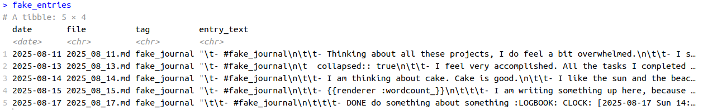
There are several problems when you import this from Logseq into R. If you like Logseq for its block structure, know that that becomes your nightmare. If you add new lines, or tags, or any other plugin feature, they are all gonna be written there.
Here is what I did to clean up this mess.
Weapon 1: fixed() for str_remove_all()
Of course, the process wasn’t smooth. I hit a syntax error trying to clean a {renderer :wordcount_} tag from Logseq (side note: that’s the function I use to count the words in my long writing within Logseq. It’s pretty neat, unless you want to load the data into R). The problem is that the str_remove_all() function thinks I’m being difficult by giving it a complex search pattern. Apparently, the curly braces are confusing the function.
The fix? fixed() (drum roll sound), which tells R to stop trying to be clever and just find the literal text. I don’t know about you, but adding “fixed” into a line of code makes it all better. It should be the default.
Weapon 2: Surgical strikes on metadata
Then there was the problem about the metadata. First, there was collapsed::true, which is just my way of telling Logseq to hide children blocks. It means if I step away from my laptop to get a coffee, my wandering thoughts don’t become public reading material for anyone walking by. The other one was :LOGBOOK: ... :END:, metadata automatically generated by Logseq’s time-tracking feature. It’s meant to record how long it passed from “assigning a task” to completing it. They are structured metadata, so they will definitely contaminate the text analysis.
What to do with those? Remove the entire lines. This is better than excluding the whole entry because it preserves any useful text that might be on the same line, while getting rid of all the noisy metadata.
Weapon 3: str_squish()
Have you heard about this function? It removes all the weird extra spaces from your text. It’s an absolute lifesaver.
library(tidyverse)
entries <- entries %>%
mutate(
entry_text = entry_text %>%
str_remove("journaling|moodlog") %>%
str_remove_all("\\n|\\t") %>%
str_remove_all("-|#|\\|") %>%
str_remove_all("\\[\\[.*?\\]\\]") %>%
str_remove_all(":LOGBOOK:.*?:END:") %>%
str_remove_all("collapsed:: true") %>%
str_remove_all(fixed("{{renderer :wordcount_}}")) %>%
str_squish()
)Chapter 2: What am I actually writing about?
I had all the entries in R, I had a date column, and a text column. What now?
Well, let’s follow the book.
The tidy text book uses as an example Jane Austen books, from the package janeaustenr. Of course, using great literature would be way cooler (more words, for one, and probably better words too), but we will battle imposter syndrome and convince ourselves that our entries have nothing to compete with.
Well, no offense to Jane Austen, but my own messy journal entries are the most interesting part of this project for me.
The first important step is to remove stop_words, meaning all the articles, prepositions and “fillers” words. You can use a specific dataset embedded in tidytext. Without the filler words, what remains it’s only important stuff (well, let’s see!).
Which is the most used word in my journal entries?
library(tidytext)
words_counted <- entries %>%
unnest_tokens(word, entry_text) %>%
anti_join(stop_words) %>%
count(word, sort = TRUE)
words_counted %>%
filter(n > 6) %>%
mutate(word = reorder(word, n)) %>%
ggplot(aes(n,word)) +
geom_col()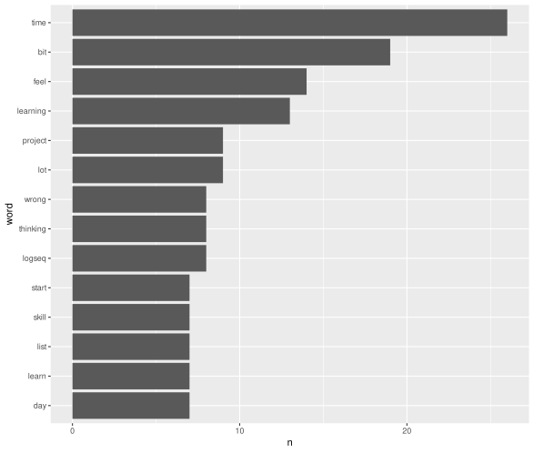
Fun fact! From my own entries the most used word was “Time”. Which I found very intriguing.
A funnier fact? That’s the second most used word in the Jane Austen books! Take that Jane Austen!
Actually, it’s also the first word for Brontë and Horwell, isn’t that interesting?
Want to do this yourself? The core of it is using unnest_tokens() to create one word per row and count() to tally them up.
Chapter 3: What is the sentiment of my writing?
Knowing what I write about is interesting, but the next logical step is to figure out how I felt when I was writing it. This is where sentiment analysis comes in. There are several different methods, or “lexicons,” available in R that assign positive or negative scores to words. I tried many using my dataset, but for simplicity, here I will use the one called “AFINN”.
The AFINN lexicon is essentially a word list where each word is rated on a scale from -5 (very negative) to +5 (very positive). The process is quite simple: the code goes through each words in my journal entries, finds all the words that exist in the AFINN list, and then adds up their scores. An entry with words like “amazing” and “happy” would get a high positive score, while an entry with “terrible” and “stress” would get a negative one.
The get_sentiment() function from the syuzhet package does all this work for you, creating a single sentiment score for each day’s entry.
The first thing I did was plot the sentiment score of my entries over time. This is where the story took another sharp turn.
library(syuzhet)
sentiment <- entries %>%
mutate(
# Using 'afinn'
sentiment_score = get_sentiment(entry_text, method = "afinn")
)
# Plot sentiment over time
ggplot(sentiment, aes(x = date, y = sentiment_score)) +
geom_line(color = "purple", alpha = 0.5) +
geom_point(aes(colour = tag)) +
geom_smooth(method = "loess", se = FALSE, color = "orange") +
geom_hline(yintercept = 0, linetype = "dashed") +
labs(x = "Date", y = "Sentiment Score")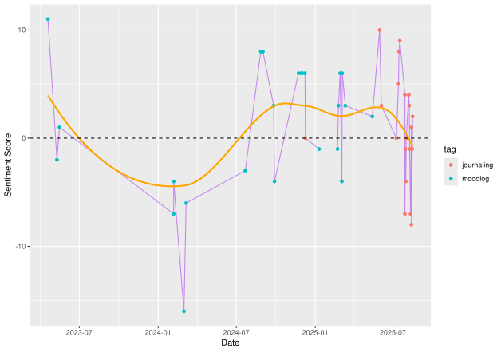
Is it my impression or is there a bit of a gap? How come?
Then I looked at the dates and realised: that’s when I was writing my dissertation! I remember now, the tag I was using during that time was #Dissertation Journal, to distinguish it from other entries. I should add those entries too. Well, easy enough, I could re-run my loop, adding an additional tag!
extract_entries <- function(file_path) {
lines <- readLines(file_path, warn = FALSE)
file_date <- str_extract(basename(file_path), "\\d{4}_\\d{2}_\\d{2}") %>% ymd()
result <- list()
i <- 1
while (i <= length(lines)) {
line <- lines[i]
if (str_detect(line, "moodlog|journaling|Dissertation Journal")) { #Add the additional tag!
matched_tag <- str_extract(line, "moodlog|journaling|Dissertation Journal") #Here too!
entry_lines <- c(line)
i <- i + 1
while (
i <= length(lines) &&
(str_detect(lines[i], "^\\s") && !str_detect(lines[i], "^\\s*-\\s?#moodlog|#journaling"))
) {
entry_lines <- c(entry_lines, lines[i])
i <- i + 1
}
# Save entry
result <- append(result, list(tibble(
date = file_date,
file = basename(file_path),
tag = matched_tag,
entry_text = paste(entry_lines, collapse = "\n")
)))
} else {
i <- i + 1
}
}
if (length(result) > 0) {
bind_rows(result)
} else {
NULL
}
}
entries <- map_df(md_files, extract_entries)
entries <- entries %>%
mutate(
entry_text = entry_text %>%
str_remove("journaling|moodlog|Dissertation Journal") %>%
str_remove_all("\\n|\\t") %>%
str_remove_all("-|#|\\|") %>%
str_remove_all("\\[\\[.*?\\]\\]") %>%
str_remove_all(":LOGBOOK:.*?:END:") %>%
str_remove_all("logseq.orderlisttype::") %>%
str_remove_all("collapsed:: true") %>%
str_remove_all(fixed("{{renderer :wordcount_}}")) %>%
str_squish()
)
sentiment <- entries %>%
mutate(
# Using 'afinn'
sentiment_score = get_sentiment(entry_text, method = "afinn")
)
# Re-plot
ggplot(sentiment, aes(x = date, y = sentiment_score)) +
geom_line(color = "purple", alpha = 0.5) +
geom_point(aes(colour = tag)) +
geom_smooth(method = "loess", se = FALSE, color = "orange") +
geom_hline(yintercept = 0, linetype = "dashed") +
labs(x = "Date", y = "Sentiment Score")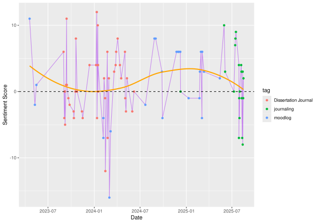
This seems about right! I am happy I left the tags in the dataset now, I could see the evolution of my journaling, from moodlog to journaling, with a big sidetrack project in the middle!
The tag column could also have a new meaning. I could now FOR EXAMPLE visualise if I was more prone to use negative words while writing my dissertation (no, we are not going there. It was just a thought).
But with these new entries, what about my most used words now?
# Re-run word frequency with the new tag
words_counted <- entries %>%
unnest_tokens(word, entry_text) %>%
anti_join(stop_words) %>%
count(word, sort = TRUE)
words_counted %>%
filter(n > 20) %>%
mutate(word = reorder(word, n)) %>%
ggplot(aes(n,word)) +
geom_col()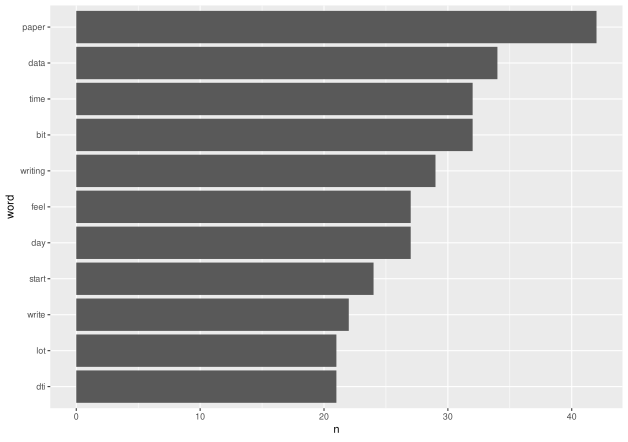
After including my dissertation entries, the word frequency analysis had completely changed. My most used word was not time anymore, but paper.
LOL. Yes, I literally laughed out loud on this one.
A word cloud solved everything
To understand what was driving these scores, I wanted to see the most common positive and negative words. The tidytext book has a fantastic visualization for this: a comparison word cloud.
positive_negative_words <- entries %>%
# i need to tokenize into single words
unnest_tokens(word, entry_text) %>%
inner_join(get_sentiments("bing")) %>%
count(word, sentiment, sort = TRUE)
# We need to pivot the data into a matrix format:
# one row per word, one column for "positive", one for "negative".
positive_negative_words %>%
acast(word ~ sentiment, value.var = "n", fill = 0) %>%
comparison.cloud(
colors = c("firebrick", "steelblue"),
max.words = 100
)
#LOL shrew is a NEGATIVE word XD 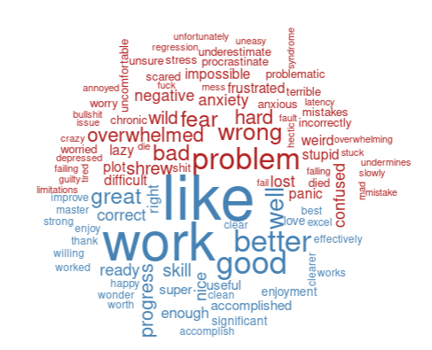
This is where things get both interesting and messy.
Apparently “shrew” is a negative word! I might need to thank Shakespeare for that. But when the shrew is your actual study species, the word doesn’t quite have the same meaning as in The Taming of the Shrew, right?
But I also see other problems. For example, “excel” could mean the verb, or it could mean I was frustrated with Microsoft Excel. “Chronic” and “stress” likely refer to a study I was working on about chronic stress, not my chronic stress.
And what about “regression”? I am sure I never meant it negatively, I was probably talking about statistics (wait, that does not exclude the negative connotation tho!)
It’s fascinating. Have you ever wondered how many scientific terms have a negative meaning? “Issue”, “regression”, “plot”… it’s a long list!
I’m also amused by how often the word “like” appears on the positive side. Am I using it too much in my writing?
Chapter 4: The emotional rhythm of my week
After wrestling with the beautiful mess of the word cloud, I could finally stop looking at individual words and start searching for broader patterns in my own emotional week.
Was there a rhythm to my moods? A secret logic to my good and bad days?
This is where Logseq’s structure really shines. Since every journal entry is automatically tied to a daily note, getting the day of the week is incredibly simple with the wday() function from the lubridate package. I decided to look at the average sentiment for each day of the week, and that’s when I found it. A clear, undeniable pattern.
Apparently, my week has a villain, and its name is Friday.
library(lubridate) # For wday()
# It should have columns for 'date' and 'sentiment_score'
workweek_sentiment <- sentiment %>%
mutate(day_of_week = wday(date, label = TRUE, week_start = 1)) %>%
group_by(day_of_week) %>%
filter(!(day_of_week %in% c("Sa", "So"))) %>% #let's remove saturday and sunday!
summarise(
avg_sentiment = mean(sentiment_score, na.rm = TRUE),
entry_count = n()
)
ggplot(workweek_sentiment, aes(x = day_of_week, y = avg_sentiment, fill = day_of_week)) +
geom_col(show.legend = FALSE) +
labs(
x = "Day of the Week",
y = "Average Sentiment Score"
)
week_sentiment <- sentiment %>%
mutate(
# Get the day of the week from the date
day_of_week = wday(date, label = TRUE, week_start = 1)
) %>%
group_by(day_of_week) %>%
#filter(!(day_of_week %in% c("Sa", "So"))) %>% #let's remove saturday and sunday!
summarise(
# Calculate the average sentiment for each day
avg_sentiment = mean(sentiment_score, na.rm = TRUE),
entry_count = n()
)
ggplot(week_sentiment, aes(x = day_of_week, y = avg_sentiment, fill = day_of_week)) +
geom_col(show.legend = FALSE) +
#geom_hline(yintercept = 0, linetype = "dashed") +
labs(
x = "Day of the Week",
y = "Average Sentiment Score"
)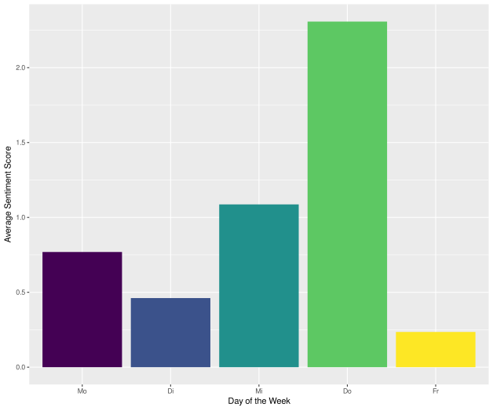
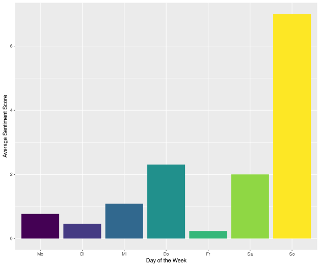
Side note: If you are wondering about the weeknames, just know they are in German!
My mood consistently takes a nosedive at the end of the work week, hitting a low on Friday. But the story gets more interesting when you look at the weekend. The sentiment shoots up dramatically on Sundays. The contrast was so stark that I ended up making two plots: one showing just the weekdays, and another including the weekend for comparison.
It was one of those moments where data confirms a vague feeling you’ve had for years.
Who knew? Well, a part of me did, I guess. But seeing it as a data point makes it real. It’s no longer just “a bad day”; it’s a predictable rhythm. And once you see the pattern, you can start to do something about it. This is a discovery I can now be mindful of: I could, for example, schedule lighter tasks for Fridays or just be a little kinder to myself when the end-of-week slump hits.
A Curious Detour - The story in my “filler” words
After looking at my main themes, I got curious. What about the stop_words? Could they tell a story too?
I started thinking about it when I saw the word “like” so often repeated. I am not sure I use it in my writing as a verb, but more like… well, exactly like that. I would find it interesting to investigate which stop words I use more often, and if I should rethink the way I write.
# Find and count only the stop words
stop_words_counted <- entries %>%
unnest_tokens(word, entry_text) %>%
# Keep only the words that are in the stop_words list
inner_join(stop_words, by = c("word" = "word")) %>%
count(word, sort = TRUE)
stop_words_counted %>%
filter(n > 50) %>%
mutate(word = reorder(word, n)) %>%
ggplot(aes(n,word)) +
geom_col()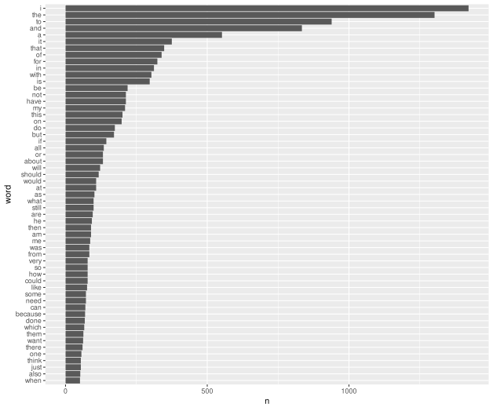
Ok, using the whole stop-words dataset might not have much information. The fact that “I” and “the” are the most used ones doesn’t tell me much on its own.
But I could filter out of this dataset. For example, I started with modal verbs. I wanted to see if I was a person of ‘shoulds,’ ‘coulds,’ or ‘wants.’ Then I went over the pronouns, then conjunctions and time transition words.
stop_words_counted %>%
filter(word %in% c("should", "could", "would", "will", "want", "shall", "can")) %>%
mutate(word = reorder(word, n)) %>%
ggplot(aes(n,word)) +
geom_col()
stop_words_counted %>%
filter(word %in% c("i", "me", "my", "myself", "you", "your", "he", "she", "they", "we")) %>%
mutate(word = reorder(word, n)) %>%
ggplot(aes(n,word)) +
geom_col()
stop_words_counted %>%
filter(word %in% c("but", "however", "although", "because", "so", "therefore", "then")) %>%
mutate(word = reorder(word, n)) %>%
ggplot(aes(n,word)) +
geom_col()
stop_words_counted %>%
filter(word %in% c("before", "after", "during", "since", "until", "ago", "within")) %>%
mutate(word = reorder(word, n)) %>%
ggplot(aes(n,word)) +
geom_col()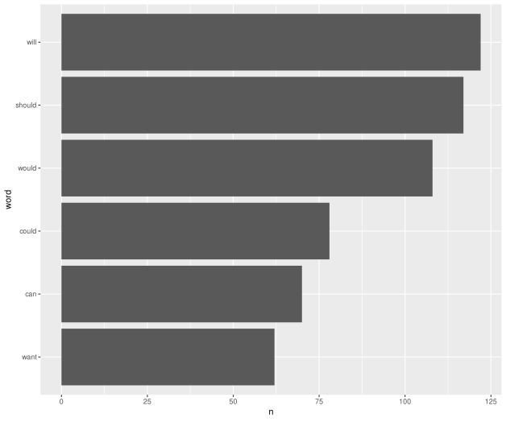 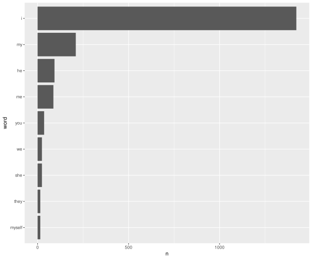 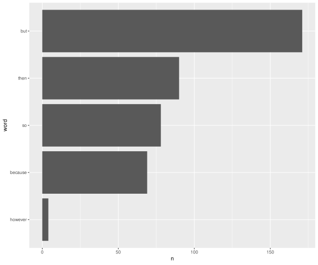 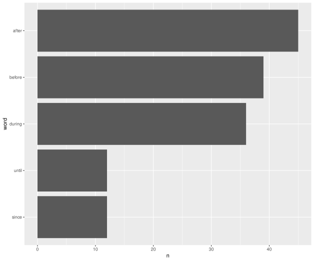
Chapter 5: The road not taken (aka: other methods)
The “Text Mining with R” book is full of other amazing techniques, and I tried a couple more.
I first tried word correlation to see which words I tend to associate with each other. The results were interesting but didn’t tell me anything I didn’t already expect (yes, dissertation is correlated with paper or writing).
Next, I tried topic modeling to see if an algorithm could automatically find the hidden themes in my journal. This didn’t work as well as I’d hoped, likely because my journal entries are often short and context-heavy.
Checking numbers with bigram was another interesting topic: I had a lot of numbers in my entries (often coupled with “minutes” or “weeks”, or maybe plain schedules) and I tried to couple numbers with their words, but that didn’t work: I somehow filtered some information from my dataset (the shrews ID from my dissertation have are unique number combinations) so that was a bit of a bummer.
While these didn’t produce mind-blowing results for my specific dataset, they are incredibly powerful techniques. If you want to learn more, I highly recommend checking out the chapters on word correlation and topic modeling in the “Tidy Text Mining with R” book!
Conclusion: Was it as powerful as I thought?
I approached this project as a beginner, wanting to see if I could find a story in the massive amount of text in my Logseq vault. The mission was biased, of course; I wanted to learn something about myself.
And I did. I learned that my focus shifted dramatically during my dissertation, that my mood has a weekly rhythm, and that the tools to find these insights are accessible to anyone willing to learn.
We all have a massive, unstructured dataset of our own lives in our notes, emails, or calendars. It might look like junk, but it’s also a goldmine. The tools to explore it are more accessible than ever, and the only prerequisite is a little bit of curiosity.
So, is note-taking that powerful? It’s powerful enough to turn forgotten thoughts into a map of who you are. And for me, that’s powerful enough.